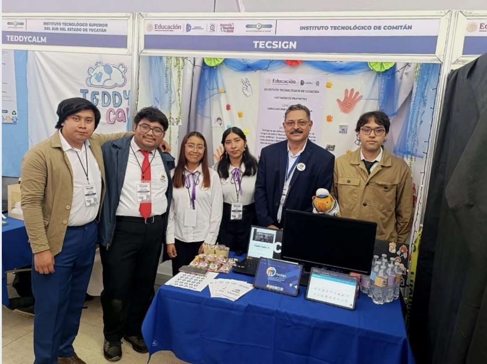
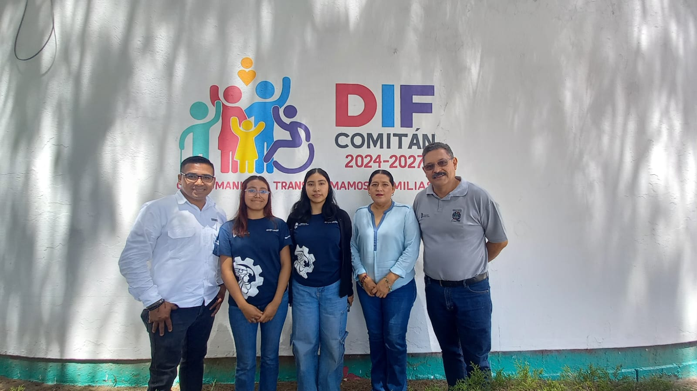
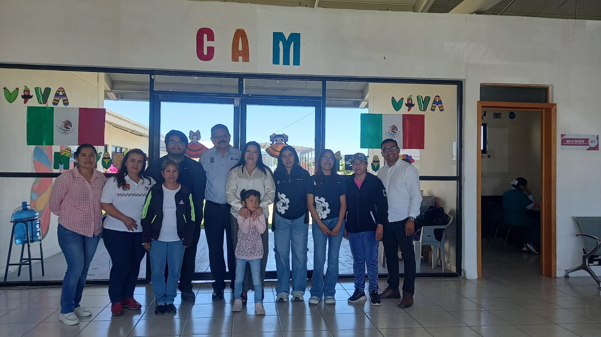
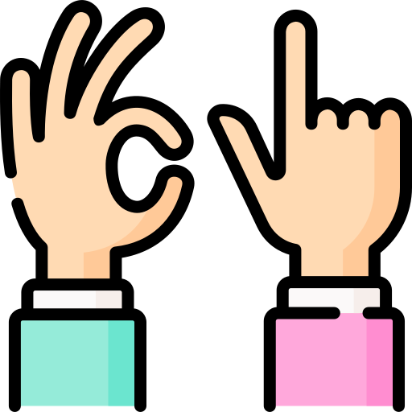

Misión
Romper las barreras de comunicación entre personas sordas y oyentes a través de una herramienta digital accesible, educativa e impulsada por un profundo compromiso social.
TecSign traduce la Lengua de Señas Mexicana en tiempo real, acercando a personas sordas y oyentes.
Ver cómo funcionaTecSign es una herramienta creada en México con un propósito muy claro: romper barreras de comunicación. Nuestro objetivo es facilitar el entendimiento entre personas sordas y oyentes mediante el uso de lengua de señas y gestos, integrando la accesibilidad y la inclusión a través de la tecnología.
Queremos que la comunicación sea un derecho para todos, sin importar limitaciones auditivas. Por eso, TecSign combina lo mejor de la innovación tecnológica con el compromiso social, ofreciendo un traductor en tiempo real y recursos educativos que ayudan a aprender y practicar señas de forma divertida y sencilla.
Más que una aplicación, TecSign es un puente: un espacio donde la tecnología se convierte en aliado de la inclusión, ayudando a que cada persona pueda expresarse, ser entendida y sentirse parte de la sociedad.
Romper las barreras de comunicación entre personas sordas y oyentes a través de una herramienta digital accesible, educativa e impulsada por un profundo compromiso social.
Ser la aplicación líder en México en traducción de la Lengua de Señas Mexicana, promoviendo una sociedad más empática, accesible e inclusiva.
Las personas detrás de TecSign

Presentación en concurso

Visita al DIF Comitán

TecSign no solo vive en la pantalla — sale al mundo real. Visitamos centros como el CAM (Centro de Atención Múltiple) para escuchar de primera mano las necesidades de la comunidad sorda y construir una herramienta que realmente marque la diferencia.

Implementar nuestro modelo de inteligencia artificial para la traducción de la Lengua de Señas Mexicana, a fin de facilitar una comunicación clara, accesible y en tiempo real entre personas sordas y oyentes.
Un dispositivo innovador que, a través de la tecnología TecSign, permite traducir los gestos de la Lengua de Señas Mexicana en tiempo real. El guante reconoce los movimientos de la mano y, junto con una bocina integrada, convierte cada seña en audio claro y accesible, facilitando la comunicación entre personas sordas y oyentes.
Pipeline bidireccional con síntesis de señas por avatar 3D y entrada por micrófono.
Motor 3D para visualizar señas, variaciones y ritmo; glosario navegable con ejemplos.
Versión de revisión: el formulario no envía mensajes. Visita la página oficial de TecSign para contactar al equipo.